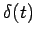

Inhalt Index DeskTop Bronstein

 Integraltransformationen Laplace-Transformation Eigenschaften der Laplace-Transformation Diracsche Delta-Funktion und Distributionen
Integraltransformationen Laplace-Transformation Eigenschaften der Laplace-Transformation Diracsche Delta-Funktion und Distributionen


Bei der Beschreibung gewisser technischer Systeme durch lineare Differentialgleichungen treten häufig u(t) und  als Stör- oder Eingangsfunktion auf, obwohl die geforderten Voraussetzungen für die eindeutige Lösbarkeit nicht erfüllt sind: u(t) ist unstetig, ist im Sinne der klassischen Analysis nicht definierbar.
Einen Ausweg liefert die Distributionstheorie durch die Einführung der sogenannten verallgemeinerten Funktionen oder Distributionen, unter die sich z.B. die bekannten stetigen, reellen Funktionen sowie die Funktion einordnen lassen, wobei die notwendigen Differenzierbarkeitseigenschaften gewährleistet sind. Die Distributionen gestatten verschiedene Darstellungen. Zu den bekanntesten gehört die von L. SCHWARTZ eingeführte stetige reelle Linearform (s. auch Distribution und Lit. 12.14).
Den periodischen Distributionen lassen sich analog zu den reellen Funktionen FOURIER-Koeffizienten und FOURIER-Reihen eindeutig zuordnen.